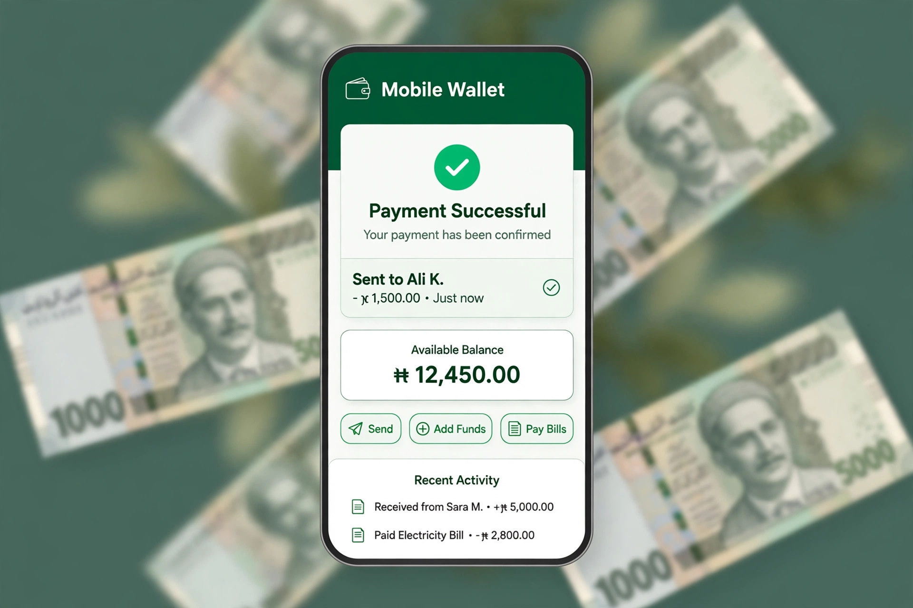

BPExch deposit: Easypaisa, JazzCash and bank, done carefully
A BPExch deposit is a manual, desk-checked process — you send rupees the way you would send them to a person, the desk matches your transaction ID, and the balance appears. It takes minutes when it is done right, and most of the scare stories come from one skipped step.
Deposit from Rs 500 by Easypaisa, JazzCash or bank transfer (IBFT/Raast). Get the receiving details from the desk first, send from your own wallet, then share the transaction ID — the credit follows once the transfer lands.
How a deposit works here
- Ask the desk for the receiving details. Deposit details are given per transaction — message the desk before you send anything, and use the number or account you are given in that conversation, not an old one from last month.
- Send from your own wallet. Transfer the amount (Rs 500 minimum) from your own Easypaisa, JazzCash or bank account. Third-party wallets cause delays and questions.
- Share the transaction ID. Send the TID from the confirmation screen to the desk. That string of digits is how your transfer is matched to your account — it is the whole ballgame.
- Wait for the credit and check the balance. Once the transfer lands, the desk credits your BPExch wallet. Check the balance inside the account rather than asking in chat; the statement shows the credit line.
Limits and timings, per rail
| Method | Minimum | Typical crediting | Notes from the desk |
|---|---|---|---|
| Easypaisa | Rs 500 | Minutes after it lands | The confirmation SMS holds the TID. Screenshot it before the screen sleeps. |
| JazzCash | Rs 500 | Minutes after it lands | Wallet-to-wallet is fastest; agent-shop transfers occasionally lag at peak hours. |
| Bank (IBFT) | Rs 500 | Same session, usually | Weekend IBFT from some banks batches slowly. Raast, where available, reflects quickest. |
Desk figures, verified October 2026. "Typical" means a normal evening — a Pakistan match at 8pm is not a normal evening, and every desk in the country feels it at once.

The three mistakes behind almost every missing deposit
Sending to last month's number. Receiving details rotate. A transfer to an old number is not lost, but it takes a human chase to recover — always pull fresh details in the same conversation where you announce the deposit. Losing the TID. Without the transaction ID, the desk is matching your transfer against dozens of identical Rs 500 credits by hand. With it, the whole thing takes a minute. Depositing from someone else's wallet. Your account should be funded by your wallet; a friend's wallet today becomes a withdrawal argument next month, because payouts return to the source.
Sent the money and the balance has not moved? Do not send it twice. Work through the ordered checks in our deposit not credited guide — wallet delay, mistyped TID, desk backlog and one rarer case, in the order they actually happen.
Your first deposit: make it a small one
However confident you feel, make the first transfer Rs 500. You are not testing BPExch; you are testing the route — your wallet, the desk's details, the crediting time, your own routine. Once the small one lands cleanly, larger amounts stop being an act of faith. The account-opening walkthrough, including the zero-balance login test to do before any of this, is on the BPExch account page.
Getting money back out
Deposits are only half of a rail. Withdrawals start at Rs 1,000, return to the same wallet you funded from, and are normally settled the same day — the full picture, including what slows a payout down, is on the BPExch withdrawal page. Read it before your first big win, not during it.
The payments cluster — money in, money out, numbers first
Take the guides with you
Questions we get asked about this
What is the minimum BPExch deposit?
Rs 500, by Easypaisa, JazzCash or bank transfer. There is no smaller test amount, and Rs 500 is exactly what we recommend for a first deposit anyway — enough to prove the route works.
How long does a BPExch deposit take to credit?
On a normal evening, minutes after the transfer lands in the receiving wallet and you share the TID. Peak match hours and wallet-side delays stretch that; a deposit that has not credited within the hour deserves a message to the desk with the TID attached.
Can I deposit from someone else's Easypaisa or JazzCash?
Please do not. Withdrawals are paid back to the funding source, so a friend's wallet today means your winnings travel to your friend's wallet later. Fund from a wallet in your own name — it keeps every later step simple.
I sent money but did not get the TID. What now?
Open the wallet app's transaction history — the TID is recorded there even if the SMS is deleted. If the transfer went through an agent shop, the printed receipt carries it. With the TID, the desk can match your credit quickly; without it, bring the amount, time and sending number and expect it to take longer.
Is there a deposit fee?
The desk charges no deposit fee. Your wallet provider's own transfer charges, if any, are theirs and are shown before you confirm the transfer.
Deposit kiya lekin balance nahi aya, kya karun?
Ghabrayein nahi aur dobara paisay na bhejein. Pehle wallet history se TID nikalein, phir desk ko TID ke sath message karein. Zyada tar cases mein paisa raste mein hota hai, gum nahi hota — hamari blog guide mein saari checks tarteeb se di gayi hain.
Last updated 9 October 2026. Figures on this page verified against the desk's own records.